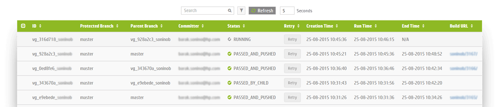

More Check-ins. Less Build Breaks.
A gated check-in solution that saves your developers' time
and fights DevOps gray hair
No thanks, We enjoy spending time on failed builds
HOW IT WORKS
- A pre-receive hook intercepts and creates an ad-hoc branch of the code.
- Verification is run via a Jenkins job. The verification job contents is fully configurable.
- Verified code is merged back into the protected branch whereas a failed commit is blocked with a notification sent to the developer.
MANAGE YOUR BRANCH CHECK-INS
WHY VERIGREEN
SAVES YOU TIME
On average, Verigreen intercepts 22% failed commits from entering into builds. You do the math. How much of your developer's time can you save?
KEEP YOUR PREFERENCES
Verigreen operates directly on the release branch so you don't need to modify your existing check-in process. Keep using your preferred programming language. IDE and code review system.
SUCCESSFUL COMMITS
Verigreen's optimistic algorithm maximizes the number of successful commits, resulting in over 20% increase in commits/hour ratio.
EASY TO USE
Deploy Verigreen as WAR file on top of Apache/Tomcat or run a Docker container for an extremely low footprint, reducing management overhead.
ABOUT US
Project Verigreen by Hewlett Packard Enterprise
This Project is being contributed to the open source community by Hewlett Packard Enterprise engineers with the goal of leveraging the power of community to create the best-in-class gated check-in technology and promote its concepts.